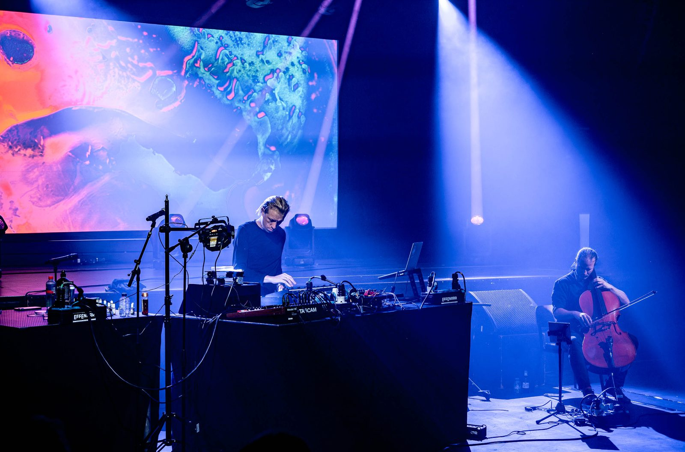
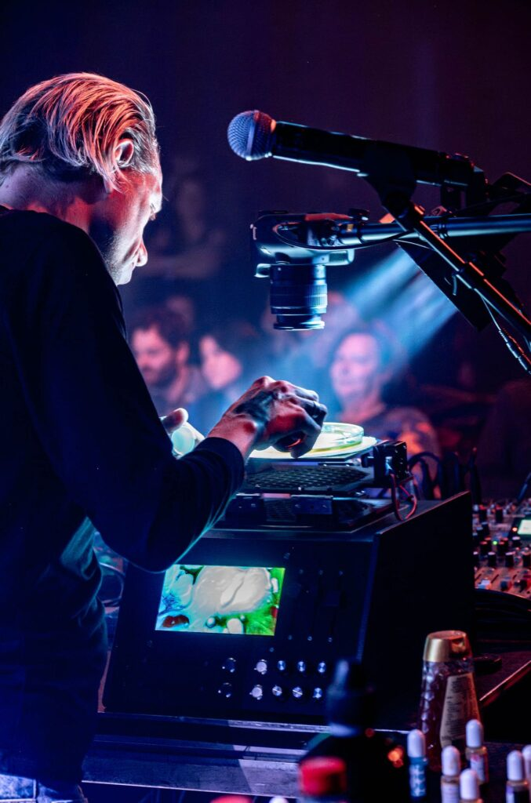
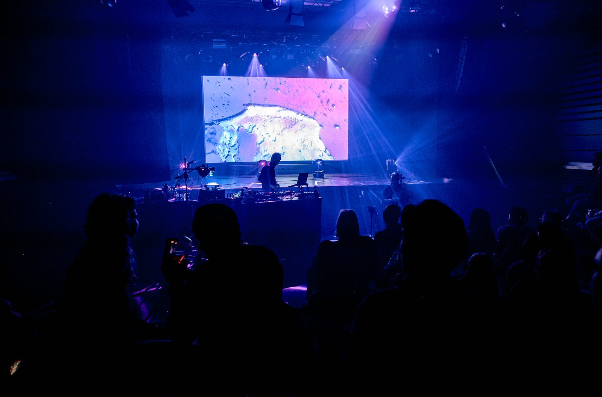

Ramses3000 videosynthesizer
Ome Tony stond er begin jaren 70 nog in een leren broek op te slangendansen. Vloeistofprojecties, ken je ze nog?
Ik ontwikkelde samen met Ramses3000 een nieuw instrument, geïnspireerd op die techniek uit de jaren 70. Geen instrument waar je muziek mee maakt, maar een instrument waarmee je ter plekke beeld componeert.
Op de machine ligt een petrischaaltje met gekleurde vloeistoffen. Water, olie, maar ook random dingetjes uit de keukenla van Ramses, zoals discodipballetjes en een fles Jif. Met knoppen kantelt hij het schaaltje in verschillende richtingen, een camera filmt het van heel dichtbij en die beelden zijn direct te zien op de achtergrond. Andere knoppen vervormen het beeld digitaal of sturen de lamp aan die op het schaaltje schijnt.
Wat je tijdens de show ziet is dus geen filmpje, maar echte vloeistof die live wordt bespeeld. Elke show is anders.
Binnenkort meer over hoe ik deze machine gebouwd heb, want het was nogal een lange weg om die beweging erin te krijgen. Vragen over de technologie? Stel ze gerust.



Grote dank aan Effenaar en alle andere betrokkenen bij Hybrid Music Vibes voor het mogelijk maken van deze ervaring.